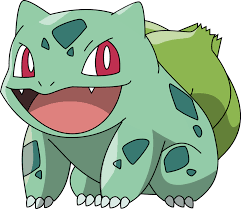

Bulbasaur é um Pokémon bonito nascido
com uma grande semente solidamente
fixado à sua
volta, a semente cresce em
tamanho como o Pokémon tem. Junto
com Squirtle e Charmander,
Bulbasaur
é um dos três Pokémon disponíveis no
início de Pokémon Red e Blue
Ele evolui
para Ivysaur.